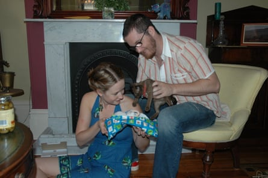
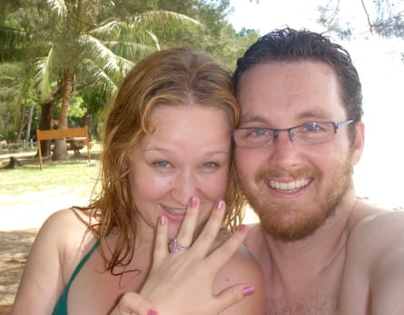
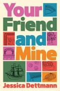

I t was the day before my 25th birthday, 2005. I was living alone in a flat in Sydney and getting ready for a friend-of-a-friend’s 30th that night. I wanted to look vengefully hot for the occasion – someone who had recently dumped me was going to be there. But later that night I forgot all about my ex.
As I was sitting in the back garden at the party, making balloon animals, I looked up and saw a man wearing a bright blue floral 80s outfit – a dress and matching jacket – with fishnet stockings and a floppy hat. It was a circus freaks-themed party and he was one of only a handful of other guests who had dressed up, the only Bearded Lady among us. His humour and confidence glowed as brightly as his pearl choker and matching clip-on earrings. I instantly sensed a very strong connection.
Drew and I followed each other around all evening, trying not to let the other realise it. A few days later I sent him some pictures from the party and we wasted an entire week of our respective employers’ time emailing all day every day, each trying to flirtatiously out-funny the other. Finally, I asked him out for a drink.
We started dating and suddenly we’d been together for eight months. Before our first Christmas as a couple, I got wind that he was planning to buy me a kitten. Feeling headstrong about my independence, I gazumped him by buying a kitten for myself. I wasn’t ready to share a pet.
Jessica and Drew with her new kitten on Christmas Day in 2005
We slotted easily into each other’s lives, sharing eclectic circles of friends, love for our close families and travel. After a year, he moved from the Central Coast to be closer to me in Sydney; after two, he moved into the flat with me and my cat.
Three years later, alone on a beach in Borneo except for the three men fixing a generator just behind us, Drew proposed to me. I was taken aback. I didn’t feel ready to settle down and I said no immediately. “I’m not ready,” I uttered. Drew simply kissed me and said: “I’ll wait until you are”.
When he said that, something clicked. I realised that whether I was ready was immaterial. I’d never felt ready for anything I’ve done that was exciting and wonderful and worthwhile. I was ready to not let that stop me.
After a few moments I said “yes”. It was the best decision I’ve ever made.
Jessica Dettmann and Drew Truslove in Borneo in 2008.
We got married in 2009. We’ve faced many challenges since – the terminal illness and death of Drew’s father, fertility hurdles, the births of two babies who could stay awake for Australia, postpartum depression, and much more – and Drew has been exactly the right balance of strong, brave, funny, sad, vulnerable, supportive, clever, kind and loving.
With Drew as my champion, I said yes to a whole lot more in life too, including writing my first book. In return, it has been the best thing ever to watch as he has thrived in his own life, as an artist. Seeing Drew’s work on gallery walls and in people’s homes thrills me every time, and there’s no one who deserves it more.
As for my kitten, Gusto, she’s about to turn 20. Our now-shared cat has always, quite rightly, loved Drew the most.
- Jessica Dettmann’s new book Your Friend and Mine (Atlantic Books, $32.99) is out on 1 July.